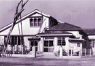
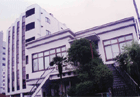
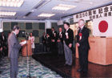
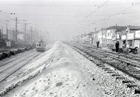
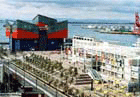

|
〒552-0003 大阪市港区磯路3丁目19番1号 |
||
| 会員サービス | その他のサービス | 組織のご紹介 | 会員企業のご紹介 | 新規入会のご案内 |
| 組織の概要 | 組織事務局 | 組織の沿革 | 港区と港産業会の歴史 | 青年部会 |
| 港産業会の成り立ちと港区の歴史を比較してみました。 |
| 年表 | 港産業会のできごと | 年表 | 港区のできごと | ||
昭和5年5月 |
任意団体築港工業会として設立発足 |
 旧木造事務所  現事務所  50周年記念式典 |
昭和9年 昭和16年 昭和20年 昭和31年 昭和36年 昭和45年 平成2年 平成4年 平成7年 平成13年 平成23年4月 |
室戸台風襲来 太平洋戦争勃発 大空襲により区内一体が焦土。終戦 八幡屋公園で国際見本市が開かれる 第二室戸台風 地下鉄大阪港〜弁天町開業 港大橋完成 海遊館 マーケットプレース 開設 港地区復興土地区画整理事業収束 阪神・淡路大震災 なみはや大橋開通 世界卓球選手権大会開催 一般社団法人港産業会に移行 |
 港地図復興土地区画 整理事業開始 (昭和21年)  海遊館 マーケットプレース 開設 |
| →組織TOPに戻る |
Copyright (C) 2007 Minato Industrial Society. All Rights Reserved. |